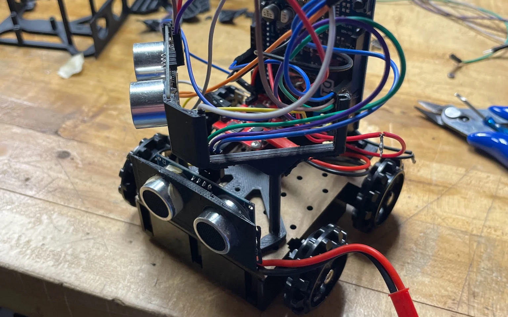
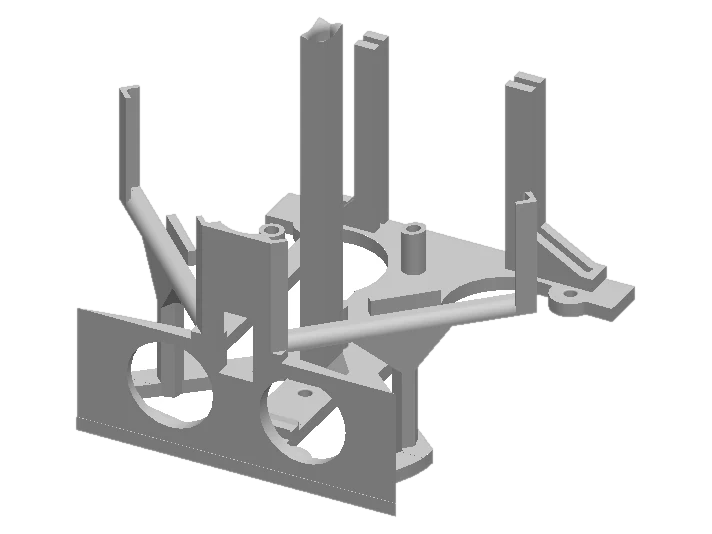
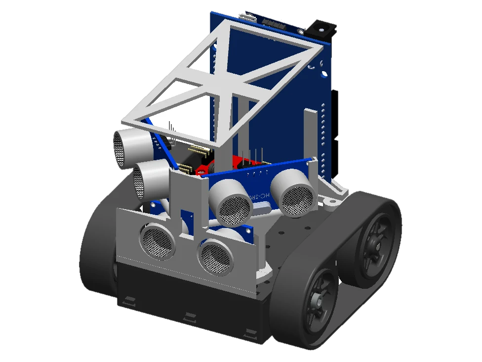

Project 01 · ENGR 122 · 2026
Robot Arena Autonomous navigation robot for the Gallois competition
Ranked 1st in preliminary standings and made the finals: 1 of 12 teams selected from roughly 650 first-year engineers.
- Role
- Led the housing design and printing. Helped debug pathfinding late in the build.
- Tools
- SolidWorks · FDM printing · Arduino · ArUco markers · Ultrasonic sensing
- Timeline
- Jan to May 2026
- Result
- 1st in prelims · finalist, top 12 of ~650 · 31 s competition run
- Housing
- Designed the main housing frame in SolidWorks around the print time limit without giving up strength. Circular lightening cutouts on the lateral panels cut material and time while keeping the frame rigid. The final slice came in at 2 hr 10 min against a 4 hour cap.
- Pathfinding
- Late in the project I stepped outside my usual scope to debug navigation. The robot combines camera-based ArUco marker localization for targeting checkpoints with ultrasonic feedback for avoiding obstacles.